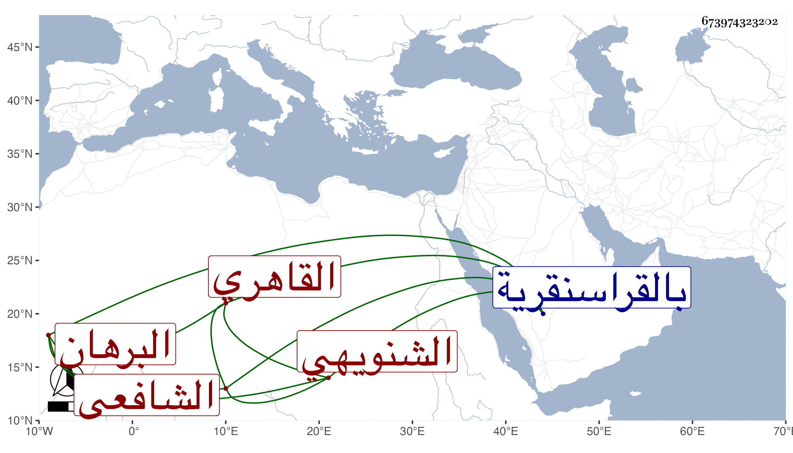

0902Sakhawi.DawLamic.ITO20230111-ara1.EIS1600.673974323202
Biography ID: 673974323202
إبراهيم بن محمد بن أحمد البرهان الشنويهي القاهري الشافعي ممن حفظ القرآن والتنبيه وتفقه بالأبناسي والبلقيني في حياتهما بالقراسنقرية وغيرها وممن أخذ عنه من شيوخنا البدر النمابة والعلم البلقيني والشهاب الحجازي وكان فقيها صالحا ذا عمل في التفسير والحديث . مات قبل البلقيني بيقين وكان حيا في سنة أربع وثمانمائة وهو والد زينب وزليخا المذكورتين في معجم النساء رحمه الله .
